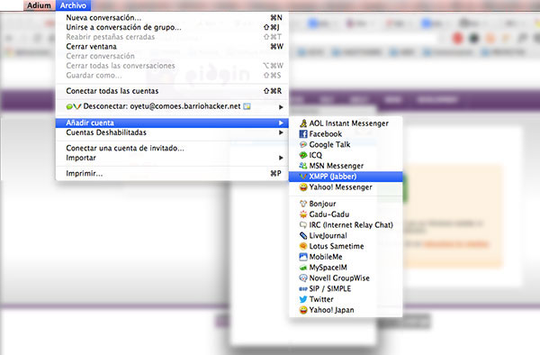
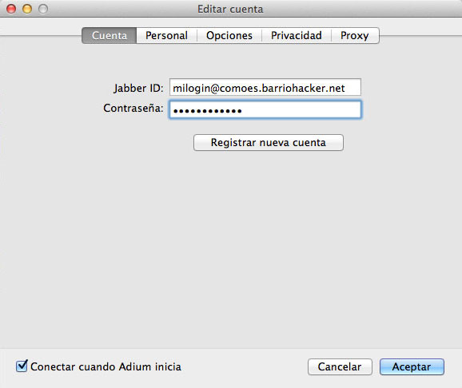

InstÁlatelo
¿Cómo puedes sumarte a esta red libre y soberana?
Existen un sinfín de aplicaciones de Software Libre denominados clientes de mensajeria, tanto para computadoras de escritorio (Psi, Gajim, Pandion, Cocinella, Pidgin, Miranda IM, Kopete, Adium, iChat, Trillian Pro), como para smartphones con android y otras variaciones (bombus, bombusmod, TipicME, Jabber Messenger Mobile Clients, etc.).
¿Que usamos en Barrio Hacker para nuestras computadoras?
Pidgin: un cliente de mensajeria multiprotocolo para computadoras.
Descarga Pidgin para Windows
Descarga Pidgin para Linux
Descarga Pidgin para Mac Os X
Puedes usar este tutorial para configurar Pidgin y conectarlo a nuestro servidor.
Ten en cuenta que nuestro dominio es: comoes.barriohacker.net
¿QuÉ niveles de seguridad podemos conseguir con Pidgin?
Este tutorial nos explica cómo nuestra comunicación puede ser más segura.
Sabiendo lo que ya sabes sobre niveles de seguridad puedes, si quieres, encriptar tus conversaciones para hacerlas muy seguras siguiendo este tutorial.
¿QuÉ usamos en Barrio Hacker para nuestros celulares del tipo smartphone?
Xabber: un cliente de mensajería para servicios basados en el protocolo XMPP/Jabber para terminales Android. La idea es que usemos este cliente con nuestras cuentas de usuario de proveedores de mensajería que usen este protocolo. Para ello, dispone de pre-configuraciones de servicios para Google Talk, Facebook Chat, Livejournal chat, entre otros. Por su puesto, podemos añadir nuestras cuentas registradas en otros proveedores, teniendo que establecer sus respectivas configuraciones de manera manual. La lista de proveedores de mensajería basados en XMPP/Jabber es bastante amplia.
PASO A PASO
Una vez instalado Pidgin Añadimos nuestra cuenta

Colocamos el nombre que queramos seguido de @comoes.barriohacker.net

Seleccionamos de nuevo el server comoes.barriohacker.net
DESDE EL CELULAR
Vamos a "Ajustes" > "Cuentas de XMPP"

Colocamos nuestros datos y pinchamos en "Añadir cuenta"
Xabber: un cliente de mensajería para servicios basados en el protocolo XMPP/Jabber para terminales Android. La idea es que usemos este cliente con nuestras cuentas de usuario de proveedores de mensajería que usen este protocolo. Para ello, dispone de pre-configuraciones de servicios para Google Talk, Facebook Chat, Livejournal chat, entre otros. Por su puesto, podemos añadir nuestras cuentas registradas en otros proveedores, teniendo que establecer sus respectivas configuraciones de manera manual. La lista de proveedores de mensajería basados en XMPP/Jabber es bastante amplia.